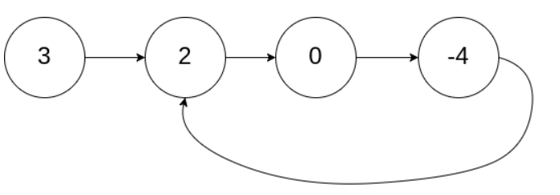
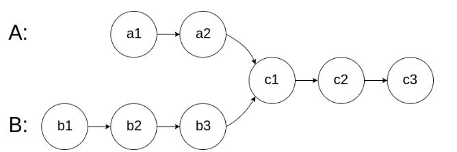

链表
插入时O(1)，搜索时O(n)。
双向链表：可以从任意节点出发去寻找节点。
基础语法
创建链表节点：
class LinkedNode(object): # object def __init__(self,val=0): self.next = None self.val = valdef createLinkedList(vals): head = LinkedNode(-1) p = head for val in vals: p.next = LinkedNode(val) p = p.next return head 通用思路
- 先判断head/head.next是否为空
问题
删除元素
Remember to check the empty List and the empty node cases.
Construct a dummy head to avoid initial process of head node.
- usually request a delete process.
指针操作
迭代
用p遍历链表，对每个p让它指向前一个node。
# 并行赋值的时候p.next要先于p赋值，不然p就被改变了p.next,pre,p = pre,p,p.next # 正确pre,p,p.next = p,p.next,pre # 错误先反转后半部分，再用快慢指针判断。可以举例子尝试s,f的不同初始位置(比如s=head,f=head.next)，来判断停下的位置是否满足要求。
写一个reverse函数实现k个翻转的操作，定义好函数的输入输出，比如：函数需要输入对于当前k个节点的头节点head和翻转后需要指向的尾部节点tail；输出则是下一组翻转需要的头节点。
解法1：用map把原来的节点和新的节点对应起来，
- 先根据next属性创建一个新的单链表，再根据原链表random的关系，从map中查找对应的新节点去指向。
解法2：把新节点插入到原来的节点之后，
这样相当于用.next关系把原来的节点和新的节点对应起来了，A'的random就是A.random.next

双指针
链表不遍历无法判断长度，因此用两个保持一定距离的指针来找到想要的node。
让f在s前n步
让f移动速度是s的两倍，初始化：
if not head: return Nones,f = head,head.nextwhile f and f.next:xxx
Floyd判圈算/龟兔算法/快慢指针

快慢指针f,s：f的移动速度是s的两倍，假设相遇时f比s多走n圈。
如果存在环，fs一定会在环内相遇（因为每次f和s的差值都会+1），当两者相遇：
- 假设f,s分别为两者走过的距离，a为环前面的长度，b是环的长度
f=2s且f=s+nb，因此s=nb，表示相遇时，算上前面的a的长度s正好走了n圈。因此当s继续走a的距离就会走到入环点。- 做法：当两者相遇，将f移到开头，fs以相同的速度移动，再次相遇的位置就是入环点。
如果不存在环，快指针会走到末尾的null节点。
Also a problem of detect cycle(judge whether they meet), just use a series of number instead of linked list.

当两个指针相遇，由于剩下的路程相同，他们会同时到达终点。因此，让两个指针以相同速度都把两条链表走一遍，总路程一致，公共路程一致，他们会在同一时刻相交。
让快指针先走n步。删除操作可以创建一个dummy_head比较方便。
简便写法：创建一个dummy_head指向最终合并的链表的头。只要pa,pb,inc(进位)有一个存在就代表还可以继续合并。
归并排序+找到链表中点+合并有序链表
归并排序，先递归划分成两段链表，对每段排序，最后两个有序链表排序。
- 递归边界为单个节点或者None。
- 快慢指针找到链表中点，将
s.next=None切断链表，注意初始化f=f.next。 - 对两段链表分别递归，返回l和r代表排好序后的两个头节点。
- 合并两个有序链表，返回合并后的头节点。
用大小为k的最小堆来做,. 这样利用了链表升序的性质，只需要排序k个节点之间的大小关系。
利用heapq库，需要定义节点的比较方法。
# 补充定义ListNode.__lt__ = lambda a,b: a.val < b.val# 或者class Node:def __init__(self, val):self.val = valdef __lt__(self, other):return self.val < other.val判断条件为堆不空
Find the middle node and reverse the right part. Merge the left and right part.
双向链表
get和put要求时间复杂度. 用双向链表+map实现：map={key:node}；双向链表实现添加和删除O(1)
初始化:
class Node: def __init__(self, key=0, val=0): self.val = val self.key = key self.pre = None self.next = Noneclass LRUCache: def __init__(self, capacity: int): self.cache = {} self.capacity = capacity self.size = 0 # initialize the dummy head and dummy tail. self.head = Node() self.tail = Node() self.head.next = self.tail self.tail.pre = self.head